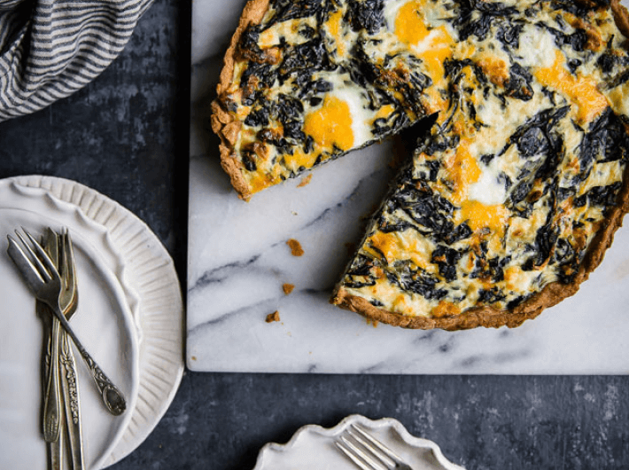

Spinat Quiche (V)
(45 Min., 12 Port., F: 19 g, K: 3,6 g, E: 11 g)

Zutaten
Für den Mürbeteig
- 100 g Mandelmehl (oder gemahlene Mandeln), 30 g Kokosmehl, 20 g Flohsamenschalen, 50 g Butter (oder Kokosöl), 60 ml Wasser, Salz
Für den Belag
- 400 g Spinat, 320 g Ricotta, 50 g Parmesan (oder jeder andere Hartkäse), 50 g Cheddar, 5 große Eier, 1 TL Muskatnuss, 1 TL geriebene Zitronenschale, 30 ml Olivenöl, eine Knoblauchzehe, eine kleine Zwiebel
Zubereitung - Mürbeteig
- Ofen auf 200° C vorheizen.
- Mandelmehl, Kokosmehl, Flohsamenschalen und Salz in eine Schüssel geben und zusammen vermischen.
- Butter (oder Kokosöl) dazu geben und mit den Händen vermengen. Wasser schrittweise hinzufügen bis alle Zutaten gut vermischt sind.
- Den Teig in eine Plastiktüte (oder Klarsichtfolie) geben und mit den Händen flach kneten. Für 30-60 Min. im Kühlschrank stehen lassen.
- Mürbeteig etwas größer als die Backform rund ausrollen, anschließend in eine gefettete und mit Kokosmehl bestäubte Backform geben und den Rand andrücken.*
- Den Teig für 18-20 Minuten backen.
* Da der Teig keine Eier enthält, kann er ziemlich zerbrechlich sein. Pass auf, dass der Teig nicht zerreißt.
Zubereitung - Belag
- Olivenöl in einer Pfanne auf mittlerer Stufe erhitzen. Zerkleinerte Knoblauchzehe und Zwiebel anbraten bis sie weich werden.
- Spinat in die Pfanne geben, Deckel auflegen und kochen lassen. Nach 3-4 Min. die Mischung mit Salz würzen und beiseite stellen, um sie abkühlen zu lassen.
- Nach dem Abkühlen die überflüssige Flüssigkeit aus der Spinat-Mischung anhand eines Siebes entfernen.
- Die Spinat-Mischung mit Ricotta, Käsesorten, Muskatnuss, geriebener Zitronenschale und 4 Eiern vermischen und anschließend je nach Geschmack würzen.
- Alles auf den vorgebackenen Mürbeteig geben. Das letzte Ei aufschlagen und vorsichtig vermischen.
- Die Spinat-Quiche für 30-40 Min. goldbraun backen.
Originalrezept unter: ketodietapp.com